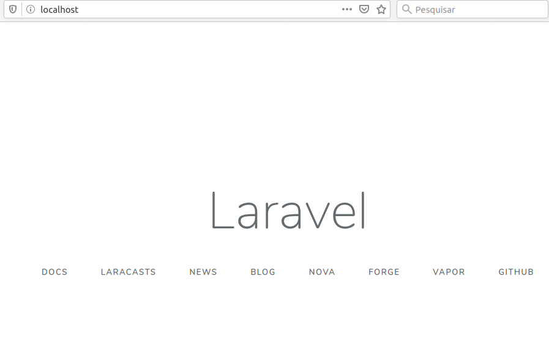

Antes de prosseguir com nosso projeto, iremos iniciá-lo no Github, assim ele ficará seguro e devidamente armazenado para posteriores mudanças. Para isso é importante que, caso não tenha, crie uma conta no Github.
Siga os passos em https://github.com para criar um novo repositório com o mesmo nome do projeto.
Abra o terminal e entre na pasta de seu projeto:
Inicie o repositório local:
Adicione os arquivos:
Verifique os arquivos:
Faça o commit dos arquivos:
Selecione o branch master do projeto no github:
Adicione seu repositorio remoto do github:
E, por último, empurre os arquivos para o repositório com Push:
Das próximas vezes em que você fizer alterações no projeto, para enviar as alterações ao github basta executar os comandos abaixo:
De nada adianta salvar o projeto no Github se não soubermos como recuperá-lo para seguir com o desenvolvimento.
É claro que tendo o projeto salvo em seu computador você pode continuar do ponto em que parou, mas, imagine se precisa formatar o PC? ou se está em casa por conta da quarentena do coronavirus e precisa trabalhar em seu projeto, mas ele não se encontra em seu computador de casa?
É aqui que entra o método de recuperar nosso projeto para que o trabalho não seja interrompido!
Abra o terminal e obtenha um clone de seu projeto no github. Isto fará o download do projeto para uma pasta com o nome do projeto, dentro da pasta atual em que o terminal está rodando:
Por padrão o gitignore evita que arquivos como o .env e a pasta vendor sejam enviados ao repositório, por questões de segurança e de rapidez. Para que o projeto funcione, precisamos recriar o arquivo de configurações .env basicamente copiando e colando o conteúdo do arquivo .env.example, e depois instalando via artisan as dependências do projeto, que ficarão na pasta vendor.
Execute o bash do laradock:
Seu terminal ficará parecido com isto:
Acesse a pasta do projeto e instale o composer:
Pronto, já temos o projeto funcionando!

Sempre que clonarmos um projeto do github será necessário seguir estes passos para que funcione!